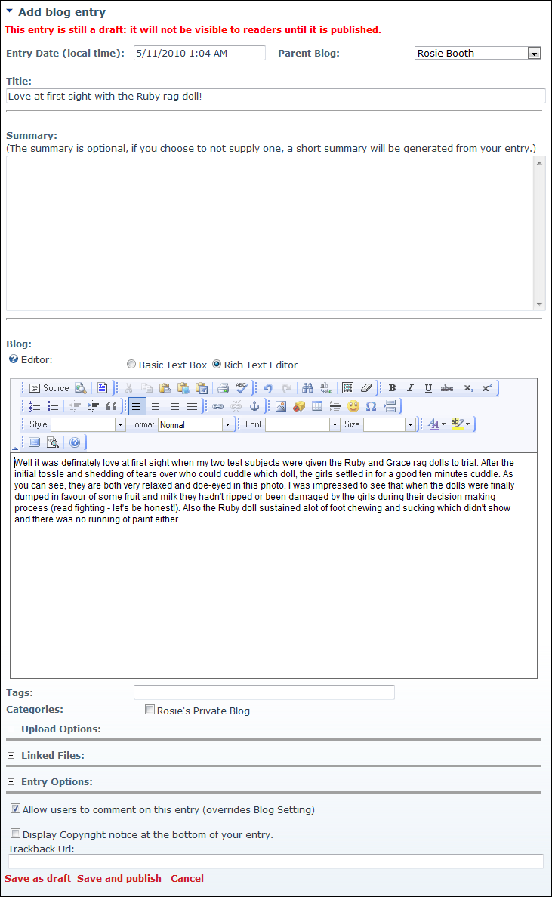

Adding a Basic Blog Entry
How to add a basic blog entry using the Blog module. This topic excludes all optional settings.
- Click the Add Blog Entry link on the New_Blog module - OR - Click on blog name on the Blog_List module and then select Add Blog Entry from the View_Blog module actions menu. This opens the Add Blog Entry page.
- At Parent Blog, select which blog this entry will be added to. If Child Blogs are disabled or if you prefer using categories for blogs, use the Categories field below.
- In the Title text box, enter a title for this blog post.
- In the Summary Editor/text box, enter a summary of the blog entry. Note: This field may be optional and may allow HTML. See "Configuring Basic Settings for the Blog Module "
- In the Blog Editor, enter your blog post.

- Click the Save As Draft link to save this entry for later publication - OR - Click the Save And Publish link to publish this entry now. The entry is now displayed to you in the Most Recent Blog Entries module. It will be visible to others only if it is published and in a public blog.

Adding a Blog Entry